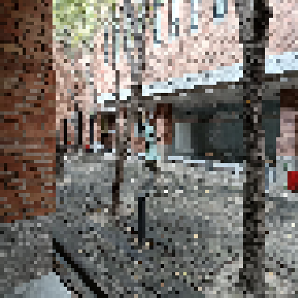
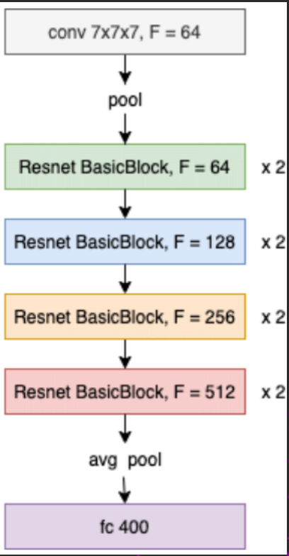
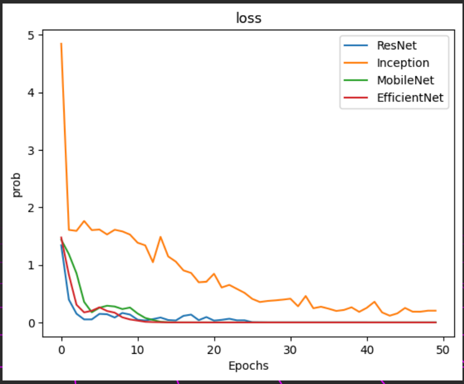
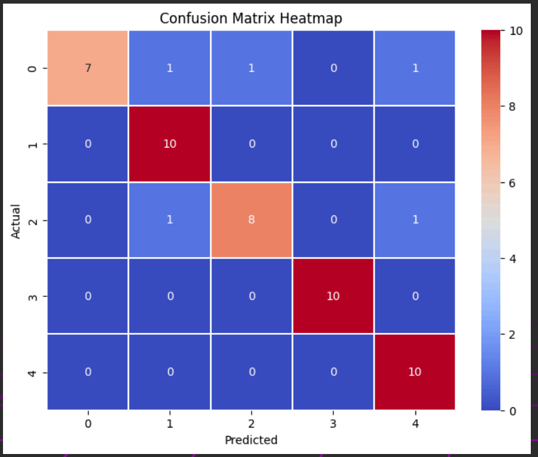

強化沉浸式體驗的視覺感知技術
我們以校園五大場景（羅馬劇場、天地之間、夏日、原味大地、鋼琴）為背景蒐集影像資料，考量不同角度與比例，包括 1:1、3:4、9:20 等，並融入早中晚與雨天元素，構建多樣化訓練集與測試集。每類場景包含超過 100 張訓練圖與 50 張測試圖，涵蓋十種角度變化。
下圖為原始校園場景照片：
為提升模型訓練效率，所有圖片皆壓縮為 80×80 彩色圖像，並統一比例與解析度：
我們選用 ResNet 為主要影像分類模型，其深度殘差學習架構能有效擷取視覺特徵，結構如下圖所示：
下圖為四種模型在訓練期間的 Loss 值變化比較：
混淆矩陣展示了模型對五類校園場景的分類準確性：
經訓練結果顯示，ResNet 準確率最高，最終我們選擇將 ResNet 作為影像辨識系統的主要架構，提升遊戲互動中的場景判斷與反應準確性。